Make to Order
Para que seja possível trabalhar com o processo de Make-To-Order é necessário que o usuário tenha as permissões necessárias, segue abaixo:
Autorizações
{kind=link}
A autorização Make-to-Order: Abrir OPs para PAs do pedido é referente ao menu Abrir OPs para PAs do pedido e bloqueia o processo para usuários sem permissão nessa autorização. Ao realizar o bloqueio, a seguinte mensagem é exibida:
{kind=link}
BR One :: Usuário sem permissão para o processo de abrir OPs para PAs.
A autorização Make-to-Order: Abrir OPs para PAs e semi-acabados do pedido é referente ao menu Abrir OPs para PAs e semi-acabados do pedido e bloqueia o processo para usuários sem permissão nessa autorização. Ao realizar o bloqueio, a seguinte mensagem é exibida:
{kind=link}
BR One :: Usuário sem permissão para o processo de abrir OPs para PAs e semi-acabados
A autorização Make-to-Order: OPs relacionadas é referente ao menu OPs relacionadas e bloqueia o processo para usuários sem permissão nessa autorização. Ao realizar o bloqueio, a seguinte mensagem é exibida:
{kind=link}
BR One :: Usuário sem permissão para abrir a tela de OPs relacionadas.
Processo
O processo de Make-To-Order é uma funcionalidade que gera ordens de produção através do documento pedido de venda, para que isso ocorra é necessário que os itens possuam roteiro padrão definidos. No pedido de venda estão disponíveis três opções no menu de contexto, são elas:
Abrir OPs para PAs do pedido
Abrir OPs para PAs e semi-acabados do pedido
OPs relacionadas.
{kind=link}
Para que estas opções apareçam no menu é necessário que o pedido de vendas esteja adicionado e/ou atualizado, exibindo o botão no modo ‘OK’. Caso o botão não esteja no modo ‘OK’ ao clicar em qualquer um dos menus, será exibida a seguinte mensagem de erro:
{kind=link}
BR One :: Para realizar o processo o documento deve estar adicionado/atualizado.
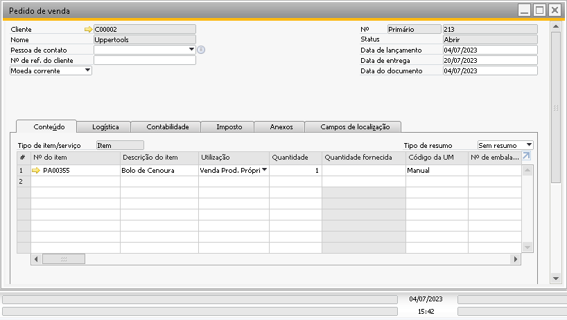{kind=link}
O campo que mostra se existe roteiro padrão definido para o item é o campo ‘Roteiro padrão’ e pode ser localizado no caminho:
Estoque -> Cadastro do item -> Aba Dados de planejamento.
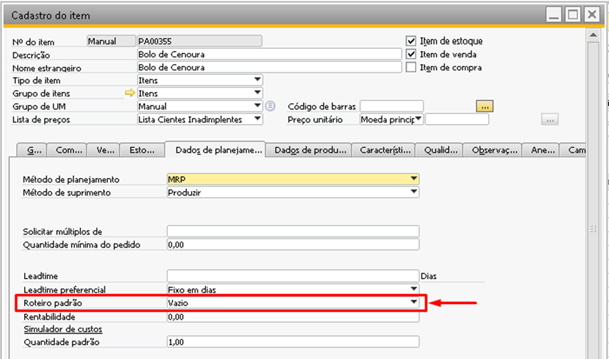{kind=link}
Mas se algum outro item no pedido de venda possuir roteiro padrão cadastrado, as OPs serão geradas normalmente para esses itens.
Para o mesmo pedido de venda n° 213, agora foi adicionado o item da linha 2 onde existe roteiro padrão vinculado. Ao clicar na opção ‘Abrir OPs para PAs do pedido’ novamente, o sistema vai identificar que o item da linha 2 possui roteiro padrão e vai gerar uma OP com a quantidade, depósito e data de entrega da linha do item. O item da linha 1 onde não possui roteiro será ignorado.
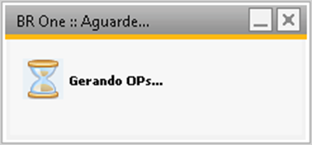 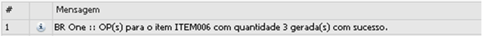 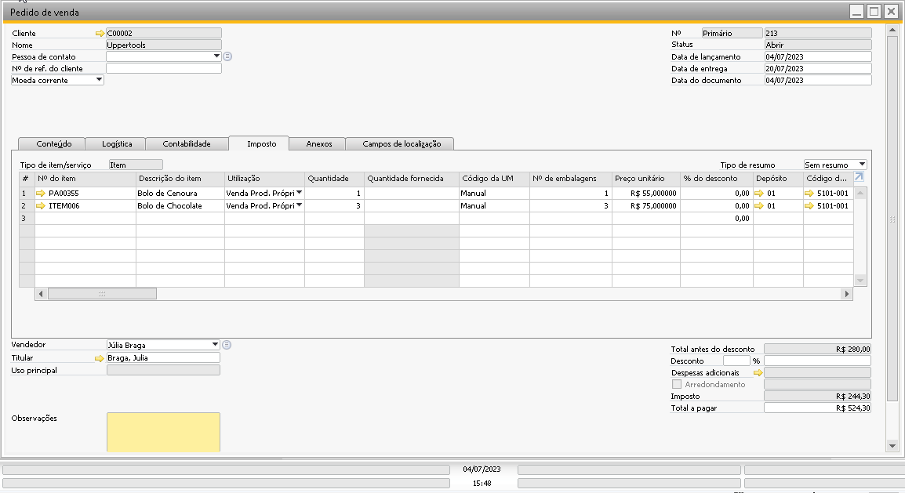 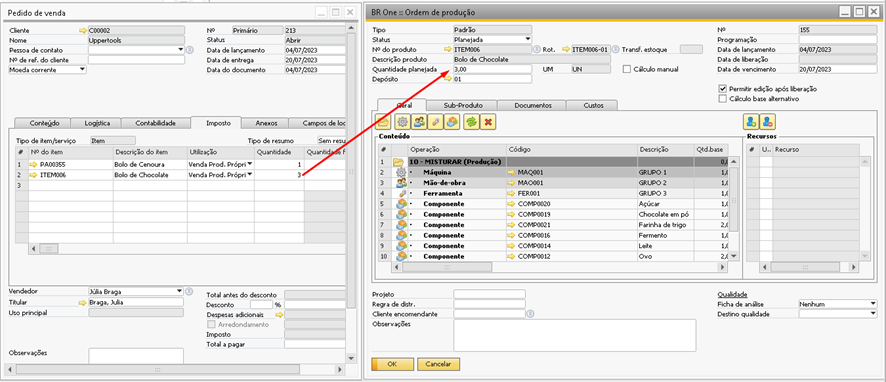{kind=link}
{kind=link}
{kind=link}
{kind=link}
Caso no mesmo pedido de vendas exista mais de um item com roteiro padrão, uma ordem de produção será gerada para cada item que possui roteiro padrão. O sistema mostrará no log uma linha para cada item que teve a sua OP gerada, como na imagem abaixo:
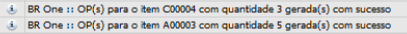{kind=link}
BR One :: OP(s) para o item X com quantidade X gerada(s) com sucesso
É possível consultar as OPs que foram geradas acessando a opção ‘OPs relacionadas’ no menu de contexto. Um relatório será aberto em tela exibindo todas as OPs vinculadas ao pedido de venda que não foram canceladas.
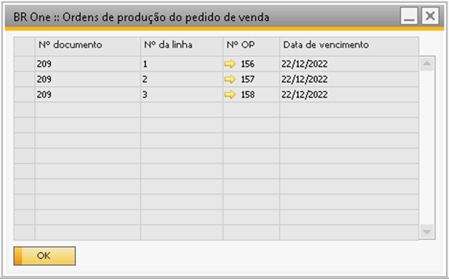{kind=link}
E caso o pedido de vendas ainda não possua nenhuma OP vinculada, a mensagem abaixo será exibida:
{kind=link}
BR One :: Não existem OPs para o pedido de venda n° x.
Quando o processo de gerar a ordem de produção por dentro do pedido de vendas é realizado, o sistema faz o vínculo entre esses documentos e pode ser visto dentro da OP acessando a aba Documentos -> Venda, conforme a imagem abaixo:
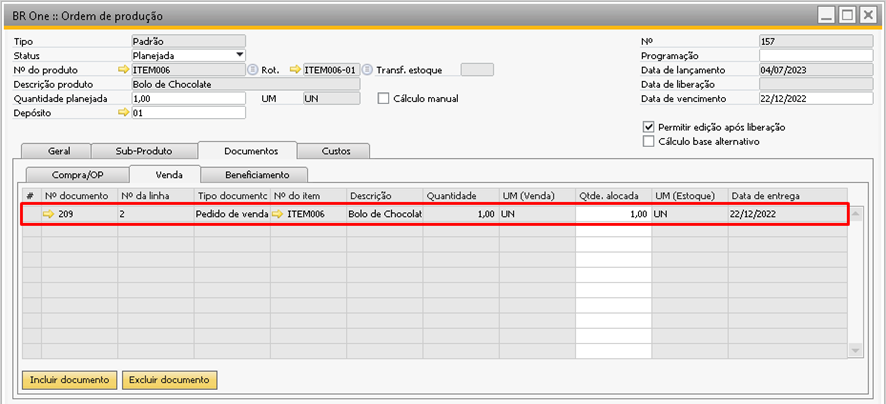{kind=link}
Como o vínculo entre OP e pedido é realizado através dos campos de vínculo tradicionais da OP, caso as informações sejam excluídas da ordem de produção, a ligação entre o pedido e OP também será perdida.
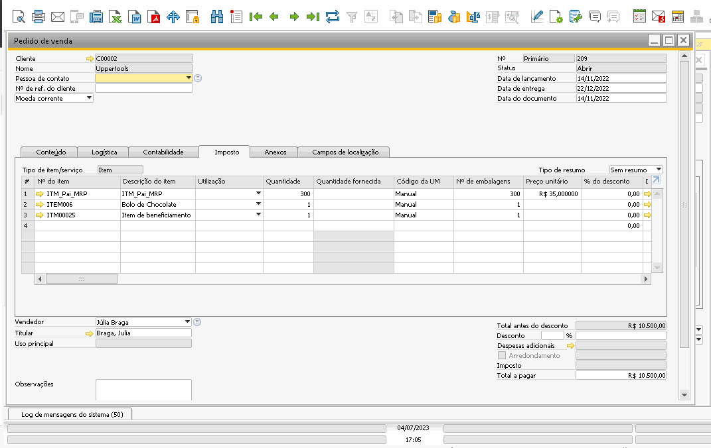{kind=link}
Caso a quantidade dentro do pedido de compras seja alterada, o usuário consegue na opção ‘Abrir OPs para PAs do pedido’ gerar uma nova OP com a diferença entre a quantidade original do pedido e a nova quantidade necessária. Acompanhe a simulação abaixo:
O pedido de vendas foi adicionado, onde a quantidade vendida inicialmente foi 3 e, após adicionado foi gerada a OP pelo processo Make to Order (acessando a opção ‘Abrir OPs para PAs do pedido’).
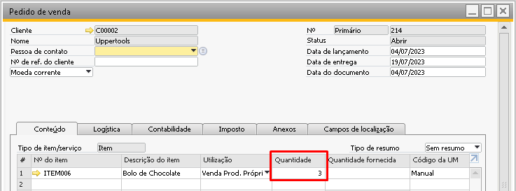 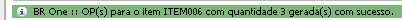{kind=link}
{kind=link}
Desta forma a OP foi gerada com o campo ‘Quantidade planejada’ refletindo ao campo ‘Quantidade do pedido de venda’:
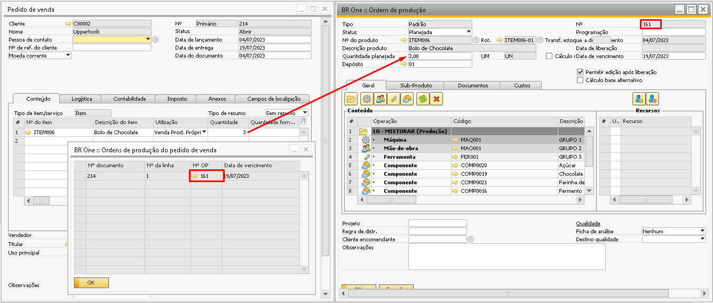{kind=link}
Porém, após a adição do pedido e geração da ordem de produção o cliente ligou novamente e informou que na realidade ele pediu quantidade errada, não era 3 bolos de chocolate e sim 5 bolos de chocolate.
Desta forma o usuário pode apenas alterar o campo ‘Quantidade’ do pedido de vendas e clicar novamente na opção ‘Abrir OPs para PAs do pedido’, o sistema vai identificar que já existe uma OP com quantidade igual a 3 vinculada e que a única quantidade faltante para atender ao pedido é 2, então vai gerar uma OP com quantidade planejada igual a 2.
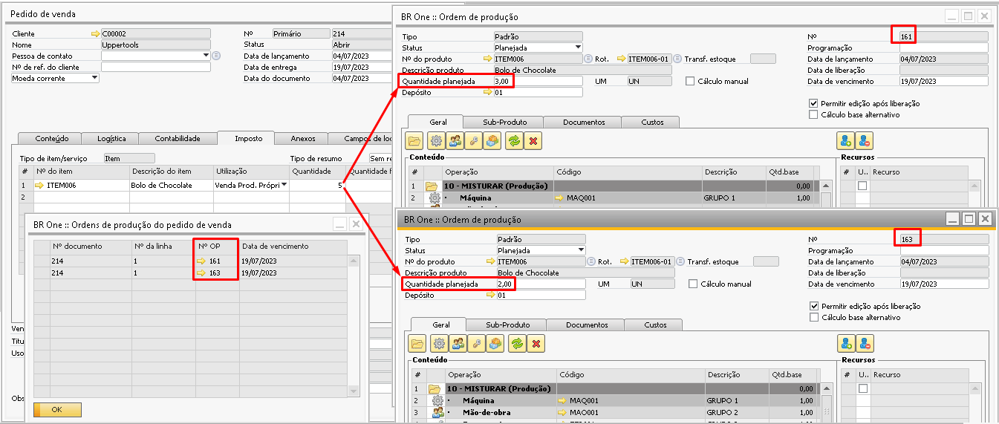{kind=link}
Caso o usuário não queira duas OPs separadas para o mesmo pedido, é possível também alterar os campos ‘Quantidade planejada’ no cabeçalho da OP e o campo ‘Qtde. alocada’ na aba Documentos -> Vendas para 5 e atualizar a OP, mas isso só é possível caso a OP esteja com o status Planejada.
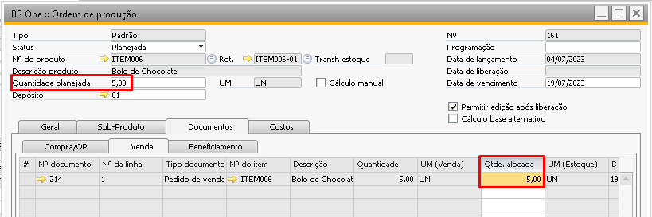{kind=link}
Quando já houver OPs geradas onde a quantidade alocada é igual ao campo quantidade do pedido de venda, ao tentar gerar novas OPs o sistema mostrará o erro abaixo:
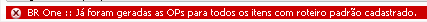{kind=link}
Existe também a situação onde dentro do roteiro do item podemos encontrar um item semi-acabado, isso é, um item que é preciso ser produzido e estar pronto para que o Produto Acabado possa ser finalizado, no exemplo abaixo podemos ver que para finalizar a produção do item ‘Bolo de Chocolate’ será preciso consumir o item ‘Cobertura de chocolate’ pois ele faz parte do roteiro.
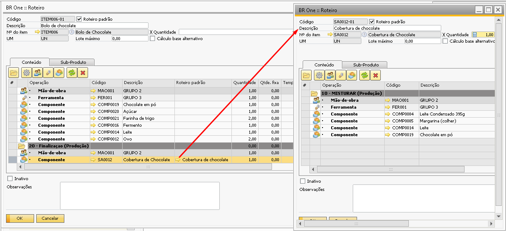{kind=link}
Caso o usuário use a opção ‘Abrir OPs para PAs do pedido’ será aberta uma ordem de produção mandando produzir apenas o item Bolo de chocolate, porém, o semi-acabado ‘Cobertura de chocolate’ também precisa ser produzido, pois ele faz parte do roteiro do Bolo de Chocolate.
Quando o item do pedido possuir mais de um nível de semi-acabado em seu roteiro e seja necessário a geração de todas as OPs para esse item (PA e semi-acabado), deve-se utilizar a opção ‘Abrir OPs para PAs e semi-acabados do pedido’, onde serão geradas as OPs de todos os subníveis do roteiro. Veremos o processo ao utilizar esta opção:
Pedido de venda adicionado, onde foi vendido 2 bolos de chocolate.
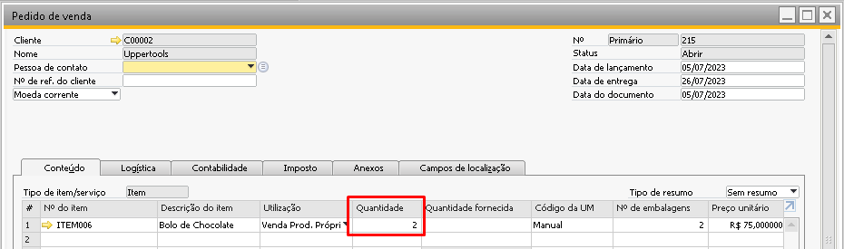{kind=link}
No roteiro deste bolo é possível notar que para produzir 1 bolo é necessário 1 cobertura de chocolate, então, para produzir os 2 bolos do pedido é necessário 2 coberturas de chocolate.
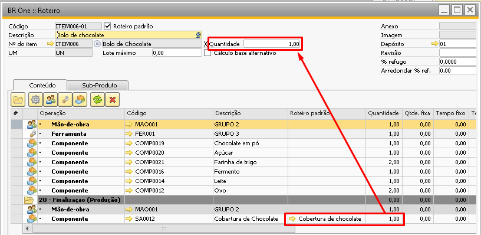{kind=link}
Então ao utilizar a opção ‘Abrir OPs para PAs e semi-acabados do pedido’ o sistema abrirá:
- 1 OP para o item Bolo de Chocolate com quantidade planejada 2 - 1 OP para o item Cobertura de Chocolate com quantidade planejada 2
No pedido de vendas ao consultar a opção ‘OPs relacionadas’ será mostrada apenas a OP para o item do pedido de vendas, e ao abrir esta OP e acessar a aba Documentos -> Compra/OP serão exibidas as OPs que foram criadas para atender a demanda dos semi-acabados.
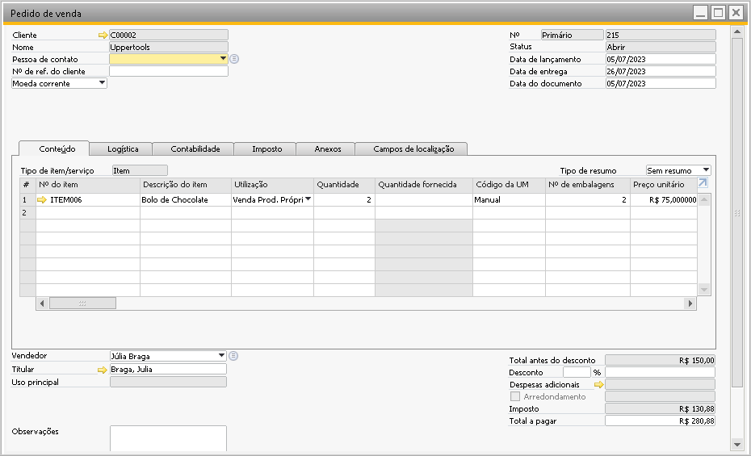{kind=link}
Existe também um outro ponto importante em relação a Ordens de produção geradas a partir de pedido de venda.
Sabemos que no cadastro do item temos diferentes unidades de medida para Compra, Venda e Estoque, sendo assim, o processo do Make to Order também irá olhar se alguma conversão na unidade de medida será necessária, segue um exemplo abaixo:
Temos um pedido de vendas onde ao invés de o cliente comprar unidades de bolo, o cliente é um distribuidor e por isso comprou uma caixa de bolos:
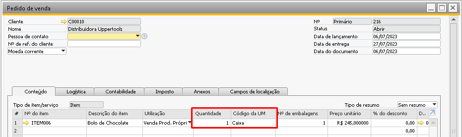{kind=link}
Ao olhar dentro do ‘Grupo de UM’ vinculado ao item nota-se que a cada caixa contém 24 unidades. Então para atender ao pedido de vendas é necessário produzir 24 bolos.
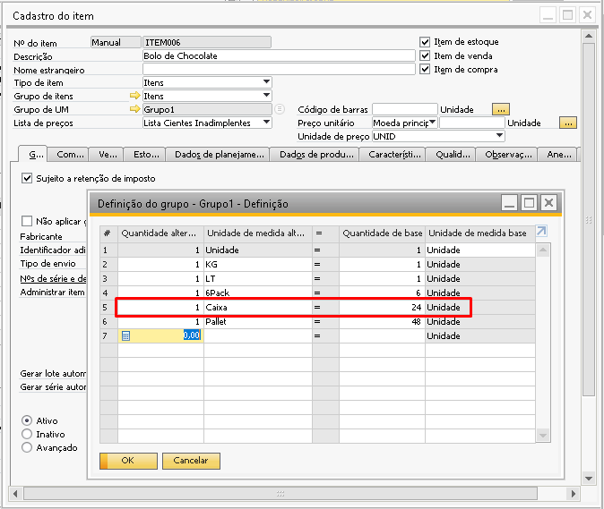{kind=link}
Ao solicitar a criação das OPs para atender ao pedido, o Make to Order está preparado para realizar a conversão das unidades de medida, tanto para a criação da OP principal quanto OPs dos itens semi-acabados. Segue o comportamento do sistema nesta situação:
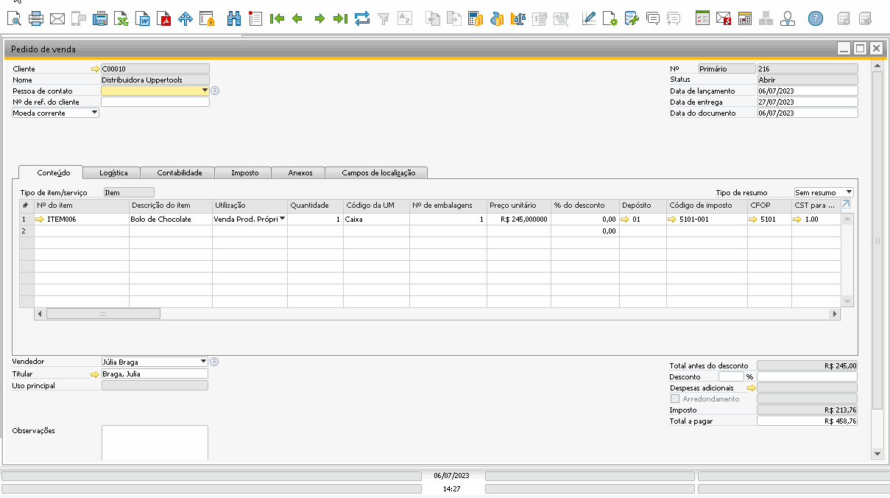 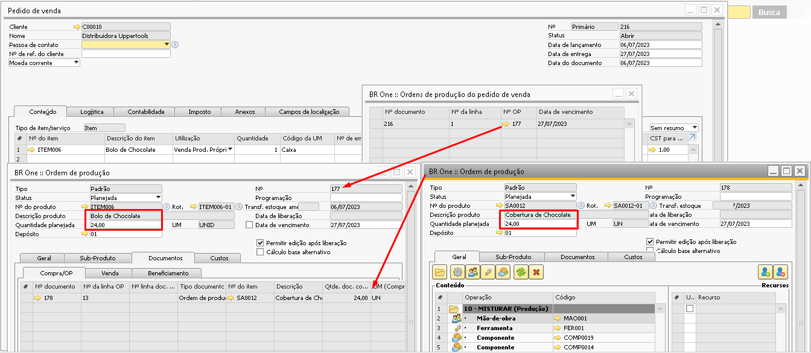{kind=link}
{kind=link}
Nos campos “Projetos” e “Regra de distribuição” podemos selecionar para que o make to order gere com essas informações na OP:
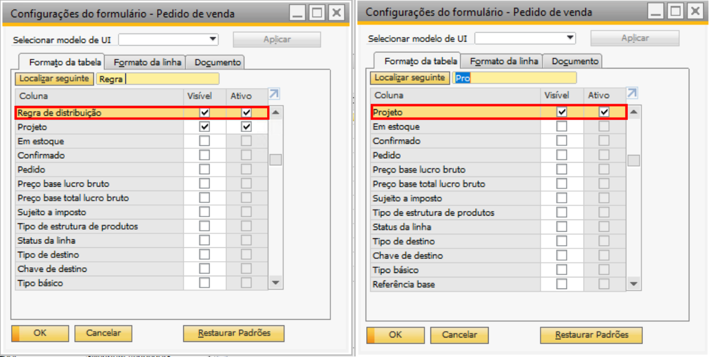Selecionando assim o que for solicitado:
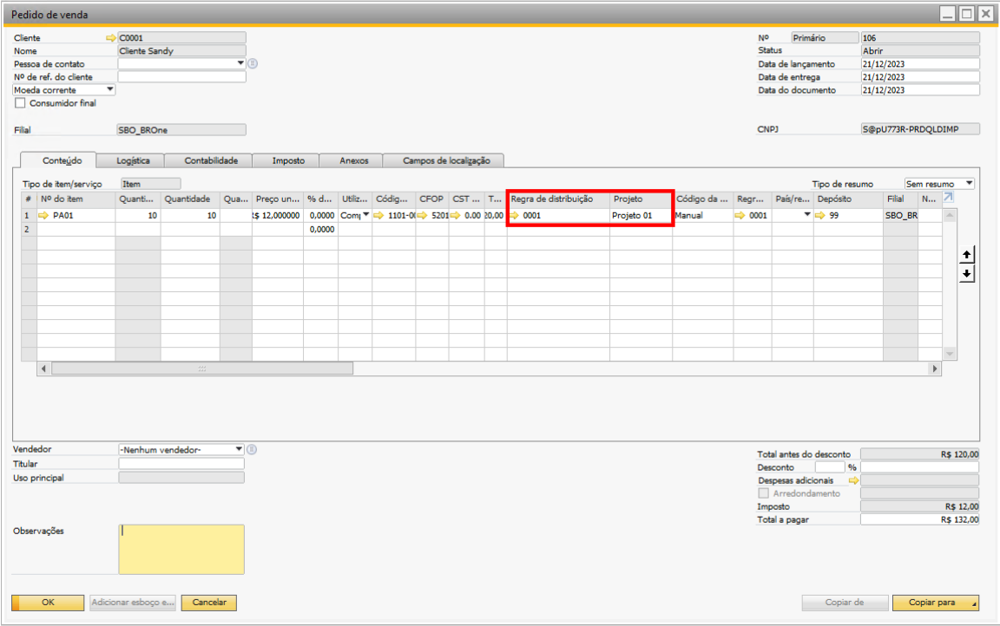Gerando um OP para o PA:
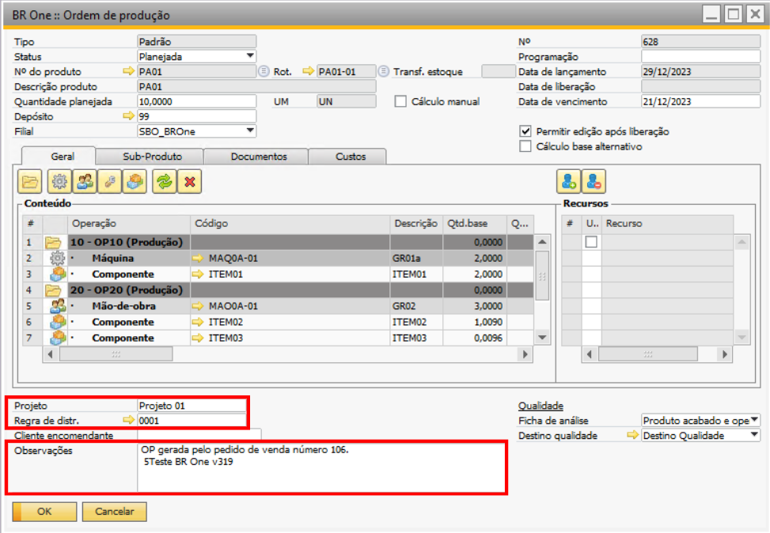